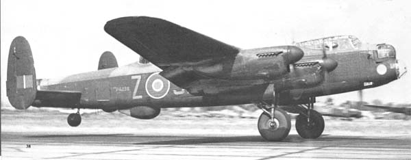

Тяжелый четырехмоторный бомбардировщик, представляющий собой цельнометаллический моноплан с двухкилевым оперением, был создан на базе среднего двухмоторного бомбардировщика Avro Model 679 Manchester. Первый прототип Lancaster поднялся в воздух 09.01.1941, а первый серийный самолёт вышел из заводских цехов 31.10.1941.
Серия Lancaster Mk. III, с 1942 года получившая обозначение B.Mk.III, отличалась от Mk.I тем, что вместо британских двигателей Rolls-Royce Merlin серий 28, 38 и 224 на них устанавливались их американские аналоги, производимые по лицензии компанией Packard. Внешних различий Mk.I и Mk.III практически не имели, кроме того, они обладали идентичными лётно-техническими характеристиками и составом вооружения, однако обозначения сериям присвоили разные из-за отличий в требованиях технического обслуживания.
Lancaster впервые приняли участие в боевых действиях в марте 1942 г. А уже с середины того же года самолёт стал основным британским тяжелым бомбардировщиком и участвовал в массированных налетах на территории Германии, Италии и Франции, применяясь преимущественно как ночной бомбардировщик. Связано это было прежде всего с недостаточной мощностью оборонительного вооружения.
Оборонительное вооружение, состоявшее из восьми 7,7-мм пулемётов Colt-Browning Mk.II, располагалось в трех механизированных башенных турелях: по два в носовой и верхней и четыре в кормовой. Максимальная бомбовая нагрузка Ланкастера была рекордной для тяжёлых бомбардировщиков Второй мировой войны: 14000 фунтов (6356 кг). Помимо обычных бомб, самолёт мог нести 8000-фунтовый (3632 кг) "блокбастер" (blockbuster) или две 4000-фунтовые (1816 кг) сверхтяжелые бомбы (high explosive) типа «cookie». Специально оборудованные самолёты могли поднимать бомбы ещё больших калибров. К одной из самых успешных операций, проведённых ими, следует отнести уничтожение флагмана Германского флота - линкора «Tirpiz».
Всего было построено 3039 самолетов серии Mk.III, которые окончательно были сняты с вооружения в Великобритании в 1950 г.